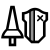
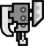
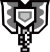
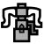
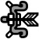

大劍: 揮舞速度較慢，但傷害較高，可以蓄力攻擊，還能進行防禦。需要預判魔物位置才能熟練使用，不過也有較為簡單的打法，利用高傷害的優點打一下就脫離。
太刀: 十分平衡的武器，具有機動力、攻擊力、攻擊範圍。有獨特的"練氣"系統，想打出高輸出需要盡力提高並維持"練氣值"。
單手劍: 適合新手使用的武器之一，操作上十分靈活，有一個小頓可進行防禦。可以在手持武器的狀態下使用道具，因此也是擔任輔助的玩家常使用的武器。
雙劍: 屬於全力進攻型武器，特殊技能是"鬼人化"，以消耗耐力的形式提高攻擊力，攻擊速度很快。
大錘: 少數的打擊類武器之一，以魔物頭部為目標，可以累積暈眩值，造成魔物倒地。雖然攻擊距離短，但傷害很高，在斜坡地形，還能變戰神。
狩獵笛: 少數的打擊類武器之一，不同攻擊會得到不同音符，組成旋律後能為周圍的隊友附加各種增益或是回血來輔助隊友。相比單手劍，擁有道具沒有的特殊增益效果，能邊輸出邊輔助。
 長槍: 一塊巨大的盾牌能給予你強大的安心感，沒有各種花式操作，只有穩定的普功和防禦，十分適合追求穩定的新手。
銃槍: 長相跟長槍類似，不過能在槍尖砲擊，還有特殊技能龍擊砲、龍杭砲與全彈發射，能打出高罷發。砲擊擁有無視怪物肉質的優點，攻擊任何部位都是固定傷害。
 斬擊斧: 能變形的武器之一，有斧和劍兩種型態可變換。可以玩強化斧或是強化劍。
 充能斧: 能變形的武器之一，手中的劍和盾可組合變形成斧頭。以劍盾模式為武器充能再轉換成斧模式打出高額傷害。
操蟲棍: 能操縱武器上的昆蟲到魔物上採集精華提升自己的攻擊力、防禦力。打法時常在空中飛，因此容易對魔物發動騎乘功擊。
輕弩槍: 遠距離武器之一，具有靈活性的弩，可以邊走位邊輸出。
 重弩槍: 遠距離武器之一，相較輕弩行動緩慢，但火力較大。也能加裝小盾牌增加一點生存能力，之前流行過散彈流，可火力壓制魔物。
 弓: 遠距離武器之一，可以根據不同情況為箭矢使用不同的效果瓶，且有多種特殊射擊技能。在高手手中，能打出十分恐怖傷害的一種武器。